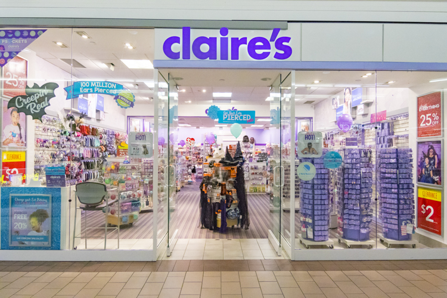

Alina Das
Hello, my name is Alina Das and I am currently a student at the University of California, Riverside studying Business Administration with a concentration in Marketing. With my degree, my goal is to receive a job in Business Analytics or Product Management in a company near Los Angeles, California. These two occupational fields are quite popular and are needed in most companies with a product. To achieve my goals of being a Product Manager or in Business Analytics, I have been using my spare time when I am not in school to work towards a job in the future.
One activity that takes a lot of my time and effort is the collegiate Hindi Film Dance Team I am president of. As president, I am in charge of the choreography, finance, administration, and production aspects of our team. As finance and administration manager, I have to make different excel sheets use the features within Excel to calculate our funds for the year. This helps me a lot when it comes to business because it shows how much goes into funding a company. To briefly summarize my main responsibilities, I hold the president position for the student organization, manning all non-financials related to ASUCR and I work with different South Asian Organizations on campus to raise money for competition funding. With this position I improved in aspects such as improvisational skills, teamwork, translating a message via a different medium, and identified trends. This dance team helped me recognize my passion for marketing.During the summer time, I also worked at a Claire’s store in my local mall as a Sales Associate. As a Sales Associate, I learned how to manage cash while assisting and communicating with guests at registers to ensure they left satisfied and happy, I had to oversee that the cleanliness, health, and safety standards are maintained in all locations of the store at all times, and I had to consult customers’ questions and complaints in person and via telephone to resolve any problems that may have occurred. I also worked at Johnny Rockets and a hostess, server, and a cashier depending on the day. As all those positions, I formatted and seated large parties of guests in the restaurant, assisted about 30 guests every three hours by making them feel welcomed, served, and satisfied with my services, and handled cash registers with more than $250 dollars and understood the income, expense, profit, and loss of the store each day.
All of these job opportunities and organization positions at my school are going to help me reach my goal because they indirectly taught me a lot about the business world and how to survive in it. I had to learn to satisfy the customer in a way that they want to come back for more. Especially in marketing, it is important to keep in mind the importance of the consumer and maintaining the customers. As I grow older, I would like to gain more opportunities to continue with my passion.
Experience
President
• Holds president position for a school organization
• Handles all finances
• Collaborate with different South Asian organizations on campus
Sales Associate
• Responsible for checking out customers
• Oversee the cleanliness of the branch
Hostess/Cashier
• Formatted and seated large parties of guests
• Made customers feel welcome and satisfied
• Handled cash registers with more than $250
Education
UC Riverside
Portfolio
